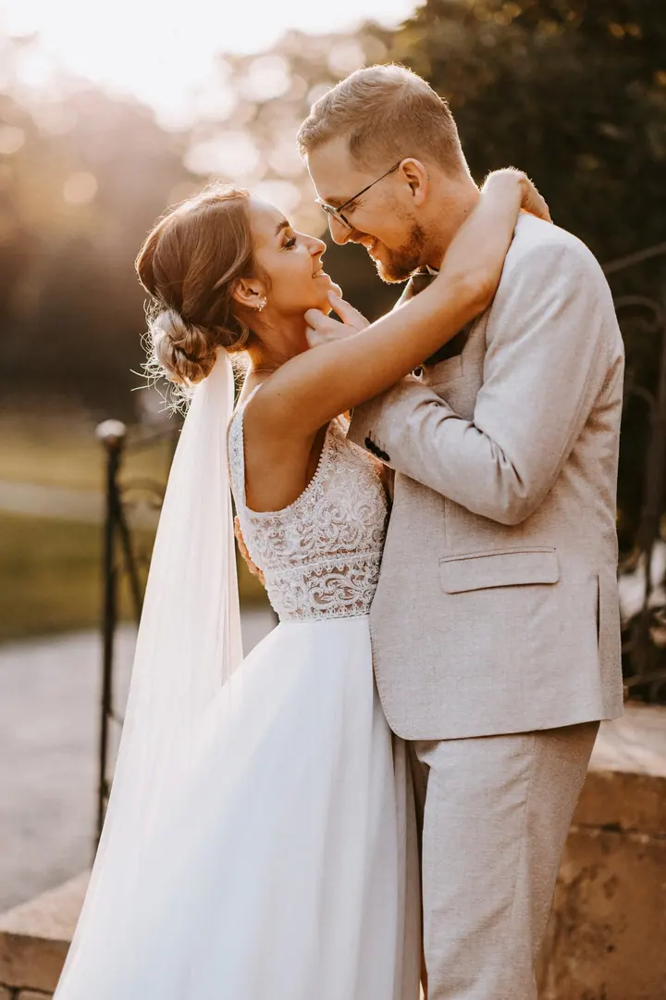
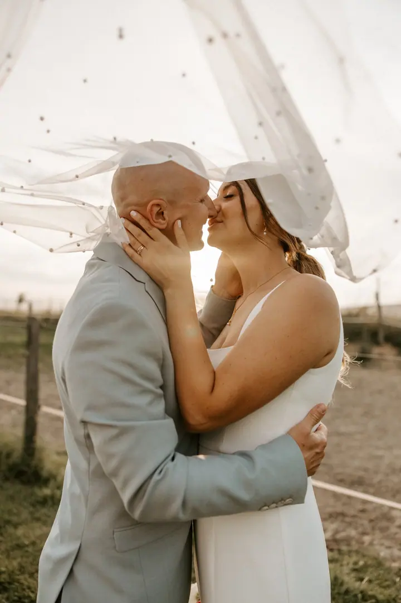
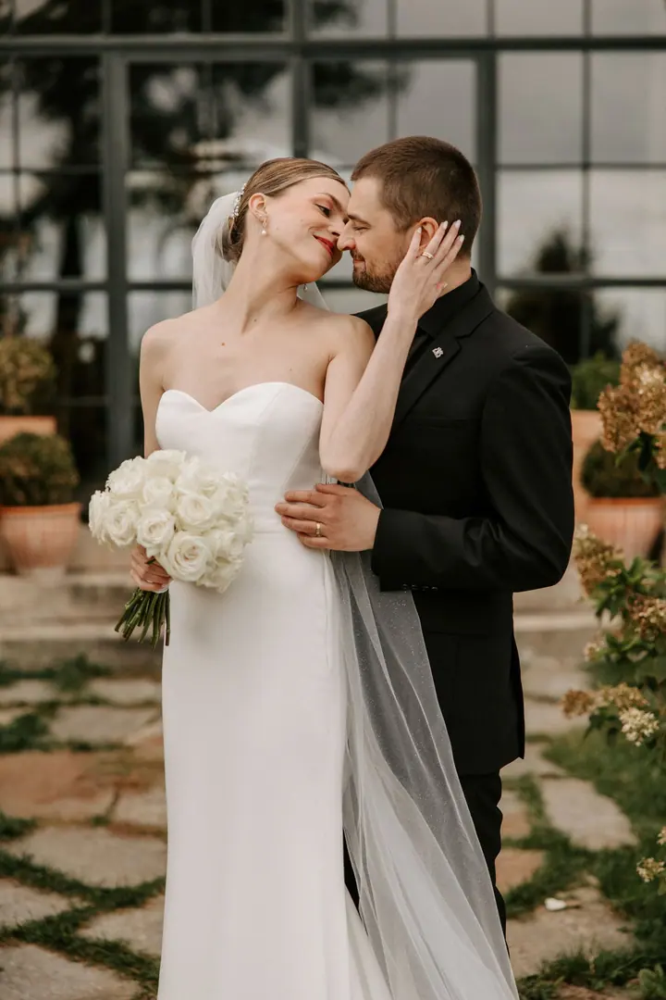
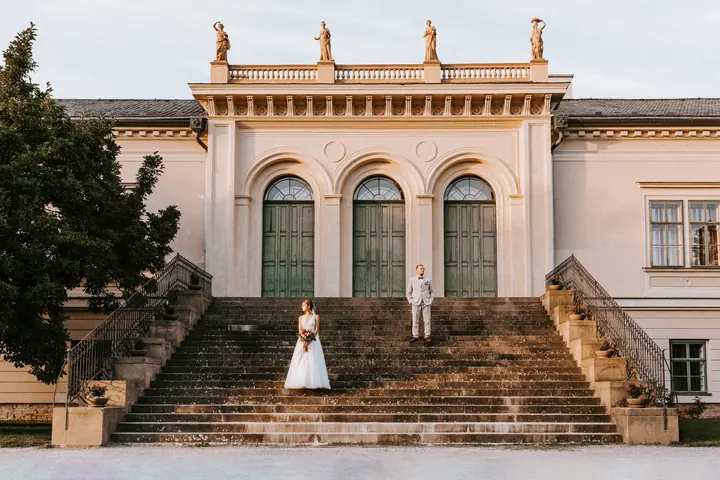

jedna
Svatební focení
Celý váš den bez strojených póz a přehnané retuše, jen opravdová láska a přirozené emoce. Celodenní balíček zahrnuje 11 hodin focení a 500 až 600 fotografií.

Svatební a rodinná fotografka · Hranice na Moravě, Olomoucký kraj, Moravskoslezský kraj

Jmenuji se Kateřina Prokopová, ale všichni mi říkají Kačka, a už 15 let fotím svatby, rodiny a páry. Nejvíc mě naplňuje láska v její přirozené podobě, bez strojených póz a přehnané retuše. Základnu mám v Olomouckém kraji, ale ráda za vámi vyrazím kamkoliv po Česku i do zahraničí.
Více o mně
Co fotím
jedna
Celý váš den bez strojených póz a přehnané retuše, jen opravdová láska a přirozené emoce. Celodenní balíček zahrnuje 11 hodin focení a 500 až 600 fotografií.
Lifestylové fotky u vás doma nebo v přírodě, studio nevlastním. Focení trvá 1 až 2 hodiny a dostanete 50 až 80 fotografií.
Radost z očekávání nového života a první dny s miminkem. Fotím v klidu u vás doma nebo venku, bez spěchu.
Něžná láska mezi vámi dvěma, bez naučených póz. Hodí se i jako předsvatební focení, kdy se navzájem poznáme.
Užívejte si jeden druhého, zbytek nechte na mně.

Za objektivem
Zdravím vás, pokud jste se dostali až sem, tak asi dělám něco dobře. Už 15 let dokumentuji důležité momenty ve vašich životech a pořád mě to baví stejně. Věřím, že dobře zdokumentovaný den má mnohem větší přesah než sociální sítě, i když srdíčka a palce nahoru taky potěší.
Nejsem vyznavačem stylizovaných fotografií. Při focení bych chtěla, abyste zapomněli na můj fotoaparát, užívali si jeden druhého a zbytek nechali na mně. Fotím na dvě těla Canon R6 Mark II, protože na svatbě nikdy nevíte, co se může přihodit.
Od března 2021 jsem nejen fotografkou, ale s partnerem Ondrou jsme i pyšní rodiče dcerky Liv. Ano, nejsme svoji, nebyl volný termín na svatbu. Liv nás od svých tří měsíců doprovází na předsvatebních schůzkách a drobnějších foceních.
Kateřina
Napište mi přes formulář, odpovídám obvykle do 24 hodin. Termín je závazně váš po podpisu smlouvy a složení zálohy 30 %.
Probereme spolu harmonogram a vaše představy, nejčastěji přes videohovor. Až do svatby jsem vám k dispozici na WhatsAppu nebo Instagramu, žádná otázka není hloupá.
Fotím celý den od příprav po večerní zábavu. Nechám vás užívat si jeden druhého a společné focení s hosty zvládneme plynule a bez dlouhého čekání.
Fotky dostanete v heslem chráněné online galerii do 3 týdnů, u balíčku Deluxe do 14 dnů. K celodennímu balíčku patří i plátěná krabička s 50 tištěnými fotografiemi.
Portfolio
Otázky
Pokud máte jasné datum, tak co nejdříve, klidně i rok dopředu. Z praxe vím, že oblíbené sobotní termíny jsou ze dvou třetin obsazené už v průběhu ledna.
Ano, beru si zálohu 30 % z celkové částky a odečítá se od konečné ceny. Rezervace je závazná až po jejím složení a dostanete ode mě i svatební smlouvu.
Cestuji z Hranic na Moravě a za dopravu na místo focení si účtuji 9 Kč/km. Fotím po celé České republice i v zahraničí.
Studio nevlastním, dávám přednost lifestylovým fotkám u vás doma nebo v přírodě. Focení trvá 1 až 2 hodiny a cena začíná na 3 500 Kč.
Napište pár vět o tom, co si představujete. · +420 604 231 199